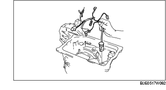

Transaxle fluid temperature (TFT) sensor removal/installation [FN4A-EL]
- • A hot transaxle and ATF can cause severe burns. Turn off the engine and wait until they are cool before replacing the ATF.
1. Remove the oil pan. (See CONTROL VALVE BODY REMOVAL [FN4A-EL].)
2. Remove the control valve body. (See On-Vehicle Removal.)
3. Remove the coupler component.

4. Install a coupler component.
5. Install the control valve body. (See On-Vehicle Installation.)
6. Install the oil pan. (See CONTROL VALVE BODY INSTALLATION [FN4A-EL].)
7. Carry out the mechanical system test. (See MECHANICAL SYSTEM TEST [FN4A-EL].)